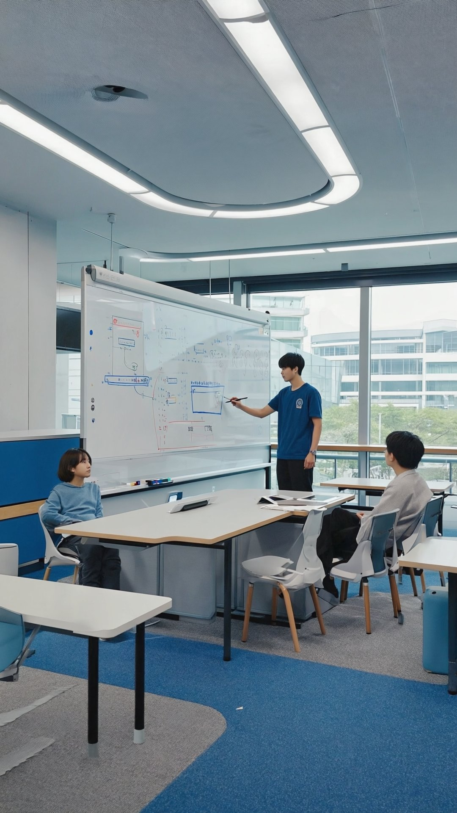
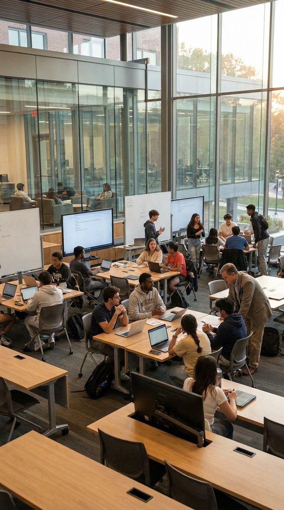

The education industry has unique needs when it comes to IT management. You need to ensure student data is secure and that you always have access to the communications and teaching tools you need to effectively educate students, all without having to spend time away from the classroom to fiddle with technology.
DTCloudOn is here to handle all your IT issues with a keen understanding of how IT concerns affect education. We have extensive experience supporting schools and educational institutions, so we know what it takes to keep your systems secure, reliable, and ready for the classroom.
Let DTCloudOn lend you a helping hand in the IT department, so you can focus on the important task of tending to your students.
Trusting your IT needs to DTCloudOn means never having to look away from your crucial duties to try and fix an IT issue. You'll always have someone on hand, around the clock, to take up the task.
Our IT support/help desk option is available every day of the year. We monitor your network when you can't, even outside of school hours. If you have a problem, contact us right away and we'll get started on a timely solution so your teachers and staff can get back to work fast.
Explore our help desk support →
We'll develop a custom IT management plan that fits your needs, your goals, and your size, offering complete IT services with expert support. Managed IT services put your technology in expert hands so you can focus on education, while business applications support helps you install and manage your educational software.
We're also certified Google Chromebook resellers, so we can assist you with procuring and configuring education equipment for your students and teams.
View our full list of IT services →Schools are responsible for safeguarding sensitive student records and academic data. In the age of a near-constant barrage of cyber threats, that can feel like an overwhelming task.
DTCloudOn offers cybersecurity solutions that protect your student data both internally and externally, with access controls, continuous monitoring, and threat prevention aligned to student-data privacy standards. It's something your students, parents, and staff will all appreciate.
Strengthen your cybersecurity →
Data backup and recovery services keep your test answers, records, and learning materials safe and secure, so critical information can be restored quickly in the event of an outage, hardware failure, or cyber incident.
Combined with centralized device management for student and staff devices, including Chromebook deployment, your institution stays consistent, secure, and ready for learning across every classroom.
Explore backup and recovery →Contact DTCloudOn today to see how our comprehensive IT services can benefit you and your students — from secure student data to reliable, classroom-ready technology.
Contact Us →Education IT services cover the management, security, and support of digital systems used for teaching, learning, and administration. These services help ensure reliable access to educational tools, protect sensitive student data, and reduce technical disruptions that can affect instructional continuity.
Education IT services implement structured security controls such as access management, data encryption, monitored backups, and incident response protocols. These measures are designed to support compliance with student data protection standards and institutional governance requirements.
Yes. Education IT services manage cloud platforms, learning management systems, and AI-assisted educational applications by ensuring stable performance, secure access, and proper integration across devices and user roles.
Managed IT support relies on proactive monitoring, routine maintenance, and rapid response workflows. Potential issues are identified and resolved early, reducing system outages that could interrupt classroom instruction or administrative operations.
Education IT services can include procurement guidance, configuration, lifecycle management, and ongoing support for student and staff devices. This often extends to Chromebook deployment and centralized device management to maintain consistency and security across learning environments.
IT service plans are designed to scale as student enrollment, staff size, and digital tool usage increase. Infrastructure, security controls, and support capacity can be adjusted without requiring major internal staffing changes.
Cybersecurity is a core component, focusing on protecting student records, academic data, and internal systems from external threats and internal misuse. Continuous monitoring and response capabilities help limit risk exposure and operational disruption.
By outsourcing IT management and support, educators are not required to troubleshoot technical issues. This allows teaching staff to concentrate on instruction and student engagement while IT operations are handled by dedicated specialists.
Talk to a DTCloudOn specialist who understands the education industry — from student-data security to classroom-ready devices and 24/7 support.
Request a Free Consultation →